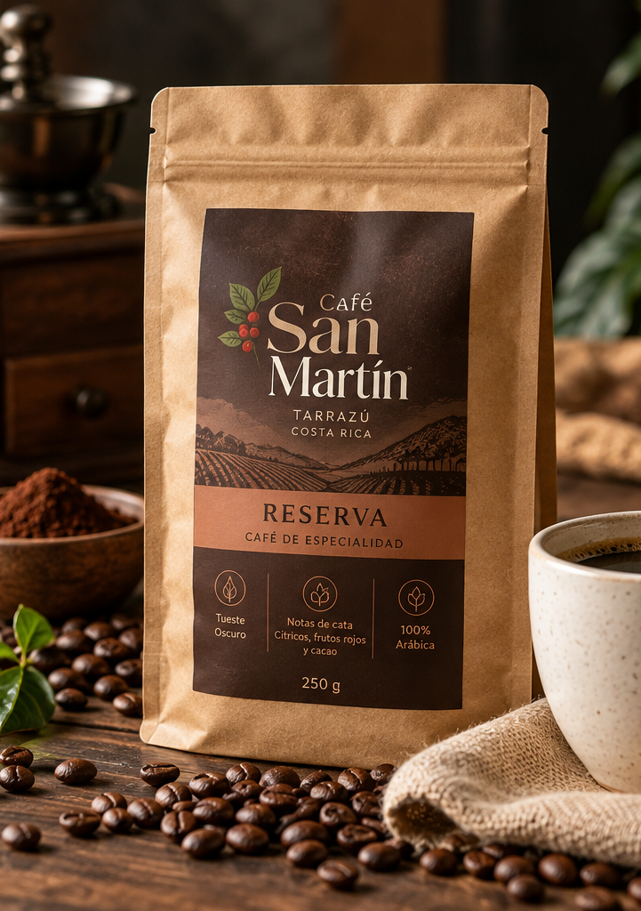
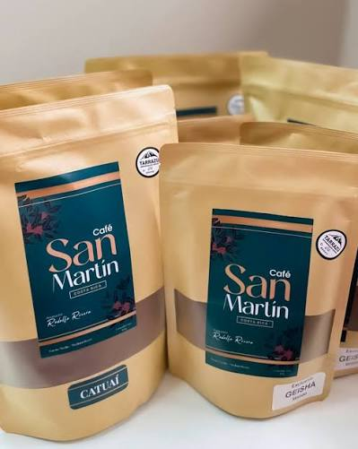

Galería de productos
Conocé nuestros diferentes tipos de café, sus características y presentaciones.
Ver productosDescubrí nuestros cafés de especialidad, cultivados con dedicación en las tierras de Tarrazú, Costa Rica.

Conocé nuestros diferentes tipos de café, sus características y presentaciones.
Ver productos
Explorá las diferentes colecciones y variedades disponibles.
Ver colecciones
Descubrí nuestras opciones de paquetes y combinaciones de café.
Ver paquetes